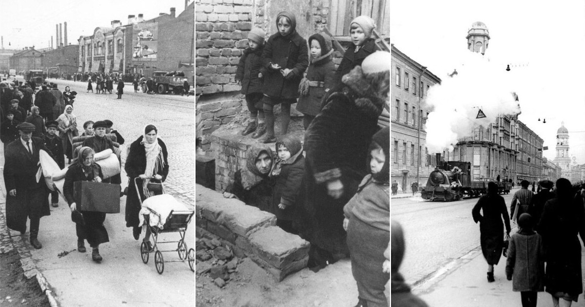

8 сентября 1941 г. началась блокада Ленинграда — одна из самых трагичных и героических страниц Великой Отечественной войны и истории России и человечества в целом. Захват Ленинграда — крупнейшего экономического и культурного центра Советского Союза — являлся одной из важнейших целей немецко-фашистского командования в ходе войны против СССР. В конце июня - начале июля немецкие войска захватили большую часть Прибалтики и вступили на территорию Ленинградской области. 9 июля пал Псков, и вражеским войскам открылся удобный и короткий путь к Ленинграду, который, однако, преграждал созданный в первые недели войны Лужский оборонительный рубеж. Бои у Луги не позволили захватить Ленинград сходу, задержали продвижение немецких частей почти на месяц и дали возможность советским войскам создать более прочную оборону на дальних и ближних подступах к городу. В середине августа немцы сумели преодолеть укрепленный район и выйти на оперативный простор перед Ленинградом.
8 сентября 1941г.
